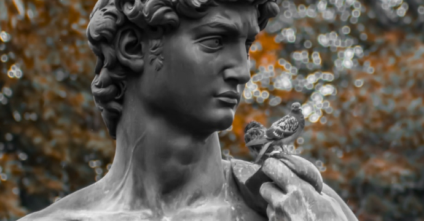

11,5 тыс
11,5 тыс

Мининформ приостанавливает статус СМИ для TUT.BY на три месяца с 1 октября
По приказу министра, с 1 октября TUT.BY утратит статус СМИ. При этом мы по-прежнему будем работать как интернет-ресурс без статуса СМИ.
Напомним, что регистрация интернет-ресурсов в качестве сетевых изданий в Беларуси носит добровольный характер. Статус СМИ дает некоторые преимущества, в частности возможность на законных основаниях присутствовать в порядке, определенном законодательством Республики Беларусь, в районах вооруженных конфликтов или чрезвычайных ситуаций, на массовых мероприятиях, в местах других общественно важных событий и передавать оттуда информацию. Однако TUT.BY был зарегистрирован как СМИ лишь в январе 2019 года, до этого — с момента основания в 2000 году — портал работал без этого статуса.
По приказу министра, с 1 октября TUT.BY утратит статус СМИ. При этом мы по-прежнему будем работать как интернет-ресурс без статуса СМИ.
Напомним, что регистрация интернет-ресурсов в качестве сетевых изданий в Беларуси носит добровольный характер. Статус СМИ дает некоторые преимущества, в частности возможность на законных основаниях присутствовать в порядке, определенном законодательством Республики Беларусь, в районах вооруженных конфликтов или чрезвычайных ситуаций, на массовых мероприятиях, в местах других общественно важных событий и передавать оттуда информацию. Однако TUT.BY был зарегистрирован как СМИ лишь в январе 2019 года, до этого — с момента основания в 2000 году — портал работал без этого статуса.